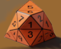

安装

这并非传统意义上的模组，而是一枚旨在提升重玩价值的额外骰子。 这是一个非常强大的工具，会在一定程度上削弱经典的Weidu系统。
正因如此，你实际上应该将这个“模组”放在最后安装！ 这对于确保游戏正常运行绝对至关重要。 此外还有其他因素需要考虑！
它有什么作用？
该模组将你在旅途中遇到的同伴NPC大多设为可选。 这意味着他们是否存在或你能否遇到他们，现在取决于骰子运气。 这使得同伴关系更具意义，因为你的伙伴现在变得非常宝贵 ——毕竟你只能冒险带上其中少数几位。 其背后的设计理念更贴近BioWare的《质量效应》和《龙腾世纪》系列！ 从现在起，你不会在每个转角都遇到同伴！不！你始终只能与固定数量的同伴一同冒险！ 共有三种模式：
模式 1——基础阵容 随机者: 在此，BioWare 开发的“同伴阵容”将完全随机生成。 所有已安装的模组均被忽略。如果你只想随机选择标准同伴，但仍希望 包含所有模组中的同伴，则应选择此模式。
模式 2 – 高级选角 随机者: 不过，让这个模组与众不同的是 所谓的“高级阵容”！这实际上是该模组最初开发时最引以为傲的亮点。 其规则与“基础阵容”相同，但现在玩家之前安装过的几乎所有同伴都会 被纳入抽选范围。具体有多少以及哪些同伴会被选中，既取决于运气，也取决于基于我设计的一套复杂 排名系统，该系统综合考虑了稀有度、种族、职业、实力以及剧情参与度。但可以这样概括： 一个同伴越无聊（剧情线/任务/恋爱线/对话越少）、越邪恶、实力越弱—— 而且越是人类——他们出现在“剑海岸”的概率就越高。 因此，遇到印迪拉（如果可用）的概率，要高于遇到艾登或 布里斯特利克的概率。如果你安装了格拉姆的NPC包，然后还为此掷了骰子， 那你真的中了头彩。 安装的NPC模组越多，游戏就越有趣。生成游侠、海盗或流浪者的概率 要高于，例如，强大的术士或桑德拉（不包括在内）。不过，同伴的平均最大数量 保持不变，因此拥有更多的同伴模组并不意味着你一定会生成 更多的同伴。事实上，安装的同伴模组越多，生成BioWare NPC的概率就越低。 因此，如果你希望在通关过程中获得最大的多样性，就应该选择此模式，并提前安装尽可能多的 同伴模组。不过，根据规则要求，你需要至少安装3个同伴模组才能游玩此模式。 根据社区反馈，该模组的后续版本可能会调整这一数量。
模式 3 — 基底铸件去除工具： 该工具已不再是随机者本身的一部分，而是一个专为 希望仅使用自己修改过的角色进行通关、且不包含BioWare NPC的玩家准备的工具。在此，所有BioWare NPC均已从基础角色阵容中移除，因此除了核心角色阵容外，你将只会遇到自己修改过的同伴。
可选： 下一个版本可以增加第四种选项，该选项仅对“模组NPC”进行随机化，而 “基础角色”则保持不变。
如何安装此模组？
支持的版本
《博德之门1》增强版 ：已包含
《博德之门1》增强版（EET） ：尚未支持
《博德之门2》增强版 ：尚未支持
《博德之门2》增强版 ：尚未支持
----------------------------------------- -
《博德之门1》 : 暂不考虑支持！
《博德之门2》 : 暂不考虑支持！
《博德之门1 BGT》 : 暂不考虑支持！
《博德之门1》Tutu ：暂不考虑支持！
《博德之门》IWD-EET ：暂不考虑支持！
该模组目前仅适用于Windows和Linux平台上的《博德之门》EE版！未来将推出《博德之门2》版本。 《博德之门2》版本将会推出，形式可能是本工具的扩展、独立应用程序，或是集成 到我正在规划（但可能永远不会真正实现）的一个大型专用工具中。
1) 虽然这是一个定制版，但该模组的工作原理与普通的 WEIDU 模组相同。 只需将“随机者”文件夹及“随机者.exe”文件放入您的 《博德之门》目录中（myPath...\Baldurs Gate Enhanced Edition） 并启动Randomizer应用程序。除 雷纳巧合版本外，您不能使用任何其他版本的WEIDU，否则该模组将无法正常运行。
2) 目前虽然并非必须，但建议安装 Argent DLC 合并工具。在未来的版本中， 这可能会成为运行该模组的必要条件。 开始菜单包含 3 个选项。请仅选择其中一个，且仅安装 一次！这是该模组的非常早期版本。请勿重复安装过程， 特别是第二个选项（扩展角色表），以避免出现任何问题或错误！如果您想再次卸载 Randomizer，请阅读卸载指南！
“选项”菜单：
1] 启动 Basic_Cast 随机器 =
输入“1”并按下回车键，以安装模块 1 并同时启动随机化程序。 在随机化程序运行（即安装）期间，系统会提示你按下回车键以确认。 按下回车键，让程序继续运行。根据已安装的随从模组数量以及 需要卸载的数量，此过程可能需要一些时间。现在安装程序会自动完成所有操作。理论上不应出现任何错误。 如果出现错误（例如因为你忘记安装 SoD-DLC-Merger），可能会出现 Yeslic 已存在的情况。 安装过程中，系统不会反馈哪些角色被选中、哪些未被选中等信息。 如果你只想混合基础随从阵容，请选择此选项。请注意，该模组仅提供有限的 随从选择，通常在8到13人之间。你无法在本次通关中遇到所有人！ 这就是该模组的核心理念！你在旅途中会遇到谁，现在完全取决于运气。2] 开始 Advanced_Cast 随机者 =
输入“2”并按下回车键，以（使用模块 2）进行安装，同时启动随机化程序。 在随机化程序运行（即安装）期间，系统会提示你按下回车键以确认。 按下回车键，让程序继续运行。根据已安装的随从模组数量以及 需要卸载的数量，此过程可能需要一些时间。现在安装程序将自动完成所有操作。通常不会出现错误。 如果出现错误（例如因为你忘记安装 SoD-DLC-Merger），可能会出现 Yeslic 已存在的情况。 安装过程中，系统不会提示哪些模组已被选中、哪些未被选中等信息。请在 已安装至少3个配套模组时选择此选项。但理想情况下，你应安装至少5–10个或更多。 重要提示： 由于这款《博德之门1：通往黑暗之门》模组的作者（他这辈子只玩过一次这款游戏），从未玩过 第三部作品，且不希望遭遇任何剧透，因此专门开发了一套机制 ，用于永久移除 WEIDU安装包中未选中的同伴，而无需修改相关模组 作者的脚本。这对模组的正常运行至关重要！不过，该模组的未来版本在某些情况下可能可在标准版 WEIDU 上运行，届时您可以恢复已被删除的同伴。如果您日后想移除该随机化器 ，可以毫不犹豫地进行操作；但已被删除的同伴将无法再次恢复（参见卸载说明）。3] 启动 Base_Cast_去除剂_工具 =
输入“3”并按“回车”键进行安装（使用模块 3），同时启动 随机者。 您需要至少安装 6 个同伴模组，才能开始安装。随后安装程序将 自动完成所有安装。通常不会出现任何错误。若因 忘记安装 SoD DLC 合并模组而出现错误，可能会导致 Yeslic 仍保留在游戏中。 安装完成后，所有 Basic_Cast BioWare 同伴都应已被移除。 若您仅想尝试使用已修改的同伴进行游戏（通常情况下 -> 参见模组规则），请选择此选项。如何卸载这个模组？
要卸载此模组，请先启动 随机者 应用，在控制台输入“u”，然后按“Enter”键确认。 随后该模组将被移除，原始 NPC 将被恢复。只要 随机者 是作为最后一个模组安装的，就不应出现任何错误。
警告！
但是，如果你是通过 Module 2 安装的 随机者，那么所有未被 随机者 随机选中的 NPC 模组 都已被卸载。如果你现在卸载 随机者，这些 NPC 模组的所有痕迹都将从 游戏内存中彻底清除，因此后续重新安装应该不会有任何问题。但是：之后，你必须 重新安装所有你绝对希望在游戏中保留的配套模组（即，分别启动每个模组安装程序 并像从未运行过一样重新安装该配套模组）。 此规则不适用于在“随机化器”之后安装的模组（参见规则违规）。兼容性
目前，随机者仅支持以下系统：
- Microsoft Windows
- Linux
- MacOS（M1+ 仅限 Rosetta）
不兼容：
- 《剑湾雇佣兵》： 遗憾的是，该模组在内容上采用了截然不同的设计思路，涉及在热点地区招募雇佣兵。
兼容性有限：
- 诸如《Xan’s New Groove》这类会修改现有同伴物品的伴侣模组，可能会干扰本工具的运行。 。
- Pecca 的 EE_content_tweaks 模组在此处未被扩展，仅进行了检查；因此，某些 Beamdog 制作的 NPC 可能会 在《SoD》的其他地方重新出现。
- 部分已发布的模组存在严重漏洞，或专为旧版本（例如《博德之门 1》）设计。 据目前所知，其中可正常运行的模组已被纳入，但仅在极少数情况下会被启用。
- 此处未纳入池中的配套模组不属于随机者核心功能的覆盖范围。0.1 版本包含以下内容：
剧透
阿拉林、阿姆罗斯、阿琳、阿拉坎、阿斯卡里亚、奥拉、艾登、布雷格、布兰多克、布里斯尔利克、德西蕾、德雷克、德里兹特、埃利里安、艾米丽、芬奇、 加文、伽利略、Glam NPC 包、灰狗、海亚斯、赫拉琳、赫尔加、胡萨姆、英迪拉、伊什利尔卡、伊斯拉、凯尔、科拉克斯、克维尔、玛格丽塔、 莫古尔、失落的母亲、穆尔内斯、奥菲西亚、佩茨、记录者、舒克、塞蕾娜、特尼亚·热米多尔、塔莫子、乌齐尔、瓦莱丽、维尔萨、维恩赛、 维克里尔、瓦拉纳、怀特、扎克里昂
版规
接下来让我们进入这份读我文件最重要的部分：模组的规则！ 你肯定已经注意到，该模组大幅提高了游戏难度，因为你 无法再根据同伴的职业和阵营自由选择同伴，而是必须 从可用的NPC池中进行筛选，并从这个较小的池子中挑选最 最适合你的同伴。如果骰子点数较低且 属性组合不利，最坏的情况下，你可能只有 6 名同伴， 其中你可能只能使用 4 名——尽管这种情况极不可能发生。但同伴 究竟是如何分类的呢？
“世界状态”基于 4 个组别。它们分别是：
第 1 组——主要角色： 该组对《博德之门》的剧情 至关重要，因此始终存在。该组包括：
- 玩家
- 伊莫恩
- 可选：所有会大幅改变或影响 剧情发展的“盖瑞苏”和“玛丽苏”角色（例如桑德拉或桑德拉），无论你是否喜欢。
第2组——核心角色（CoreCast）： 任何仔细阅读过README文件的人都会遇到 “CoreCast”这一术语。该组角色的特点是在主线或支线剧情中扮演重要角色，在游戏世界中具有 视觉和叙事上的存在感，或者——与第1组类似——充当剧情锚点（SoD）。该组 在各个方面几乎与第1组不相上下。 它也（几乎）绝不会被纳入本随机者。与第1组的区别主要在于 上述各点的重要性程度不同，这体现在该组内部的 等级结构中。该组包括：
1. 斯基·银盾 + 其兄（第3组——《SoD》和《Del’Vortel：一个女孩灵魂的代价》） + 埃尔多斯（从第3组偷偷混入第2组）
1. 沙埃尔·科温上尉/少校（《SoD》和《爱能征服一切》）以及 闪耀女士/凯拉尔·阿根特（《SoD》和《爱能征服一切》——严格来说属于第1组，但从随机者的 角度来看，基于纯粹的可玩性，将其归入第2组也是可以接受的）
1. 贾海拉（BG1、2、3）和哈利德，由于他们与戈里昂的关系以及主线剧情中众多 关键节点，是第二组中最重要的代表，与其他配对并列。
1. 吉莫（BGII）
2. 仅限SoD：尼拉（否则归入第3组）
2. 仅限SoD：贝洛斯和麦金（否则归入第3组）
2. 萨雷沃克（BGII）：来自任何萨雷沃克模组
2. 菩提（BGII）：来自任何菩提模组
2. 乔恩莱斯一世（BGII）：来自任何伊雷尼库斯模组
2. MDE三人组（在Randomizer v0.1.0版本中曾作为实验性角色被归入第3组 -> 违反自身规则，因为明斯克在BG3中需要一个移除模组）
2. 维科尼亚（曾在Randomizer v0.1.0版本中作为实验性角色被选入第3组 → 违反自身规则，因为据我所知，她在《博德之门3》中需要一个反映此状态的超大型模组）
3. 布拉格船长（Jastey 的《布拉格的救赎》）——尽管我从未玩过这个模组，但这个角色在剧情中占据如此重要的地位，以至于我曾以为他是 BioWare 原班人马中我遗漏的一员。
3. 索劳费因模组（Argent77）
3. 凯尔西模组（jcompton 和 Ghreyfain）
3. 《博德之门2》第一组（Cernd、Valygar、Nalia、HaerDaelis——仅限实验性使用）
4. 《博德之门II》第2组（阿诺门、凯尔多恩、玛兹、简）
4. 卡盖恩是第一位“居民”
4. 赫克萨特（《博德之门II》隐藏角色）是第二位“居民”
5. 布兰文（算是一种0.5级居民）在Randomizer v0.1.0的开发过程中已被“粗略”地加入到第3组中
如果大家有此需求，第二组中等级低于3级的所有角色都可以在Randomizer的后续更新中加入第三组！ 我造成的规则违规问题，可以在《博德之门3》（等我通关后）或Randomizer模组的后续补丁中修复。
第3组——随机化组： 随机化组目前由两个子组组成，后续将扩展为三个
- 1) BasicCast：所有BioWare同伴（尚未归入第1组或第2组的）均包含在此
- 2) AdvancedCast：此组包含所有BioWare同伴（尚未被归入第1组或第2组的）以及所有模组同伴
- 3) ImprovedCast：（目前未包含）——此组仅包含模组同伴
第4组——空白角色组（目前未包含——仅限AdvancedCast） 计划中将新增第四组由我制作的所谓“空白角色”。 这些是特别弱小或令人讨厌的人类雇佣兵或乡民，其等级无法超过 6级（在《博德之门2》中也是如此） 如果玩家未安装足够的模组同伴来满足 模块2的AdvancedCast需求，这些角色将填补空缺。它们被生成的概率将保持较低（50%）
违规行为：
总会有一些作弊者试图钻游戏的规则空子。 使用这个模组，当然可以做到这一点——只需在安装本模组后，再安装另一个 配套模组即可。这样一来，那个同伴自然会 始终出现。对于因任何原因 未被包含在此模组中的随从，情况也是如此。这种做法会降低游戏的乐趣，因为 它规避了随机性，并使该模组的初衷变得毫无意义。 请不要这样做！请务必将此模组安装在最后！ 使用Argent77的A7-NPC发电机也属于违规行为，因为 使用该生成器创建的自定义同伴，显然无法被 随机者选中。如果您仍希望使用该工具，请勿创建超过 一个自定义NPC，以免影响游戏的乐趣。链接与下载
如有任何疑问或建议，欢迎通过Beamdog或蜡烛守卫论坛联系我们。 也欢迎其他模组制作者通过提供的电子邮箱与我联系。